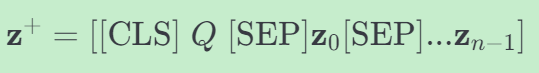

CogLTX Applying BERT to Long Texts
本文最后更新于 2025年4月14日 下午
这是一篇来自Nips20的文章，提出了CogLTX框架，旨在解决BERT模型处理长文本时的内存和时间消耗问题。
研究背景
BERT模型在处理长文本时面临内存和时间消耗呈二次增长的局限性。
- 长文本的直接预训练的最大位置嵌入通常在BERT模型中限制为512个标记。
- 然而，即使提供了更大位置的嵌入，由于在训练期间需要存储所有激活以进行反向传播，内存消耗仍然可能无法承受。例如，一个包含500个标记的文本即使批量大小为1，也需要大约14.6GB的内存来运行BERT-large模型，这超出了常见GPU的容量（例如RTX 2080ti为11GB）。
- 此外，计算复杂度O(L2)随着文本长度L的增加而迅速增长，这进一步加剧了长文本处理的挑战。
现有的解决方案如滑动窗口或简化变换器存在长距离注意力不足或需要定制CUDA内核的问题。
方法
这篇论文提出了一种名为 CogLTX 的框架，旨在将 BERT 应用于长文本处理。其方法论基于人类认知理论，通过模拟人类工作记忆（Working Memory）的机制来处理长文本。
CogLTX 的核心假设
CogLTX 的核心假设是： - 关键句子假设：对于大多数 NLP 任务，长文本中只有少数关键句子包含完成任务所需的信息。这些关键句子可以被提取并组合成一个较短的文本 z，满足：
$$
\text{reasoner}(x^+) \approx \text{reasoner}(z^+)\\
$$
其中 x+ 和 z+ 分别长文本 x 和关键文本 z 针对 BERT 的输入。
CogLTX 的关键组件
CogLTX 包含两个主要组件：MemRecall 和 Judge。
MemRecall
MemRecall 是一个模拟人类工作记忆的过程，负责从长文本 x 中提取关键文本块 z。其工作流程如下：
- 输入：长文本 x 和初始关键文本 z+。
- 检索竞争（Retrieval Competition）：
- 对每个文本块 xi，计算其与当前 z+ 的相关性分数：
$$ \text{score}[x_i] = \text{judge}([z^+ \text{SEP} x_i])[x_i]\\ $$ - 选择分数最高的若干块加入 z，直到 z+ 的长度超过 BERT 的最大长度限制 $ L $。
- 对每个文本块 xi，计算其与当前 z+ 的相关性分数：
- 复习与衰减（Rehearsal & Decay）：
- 对已加入 $ z $ 的每个块 $ z_i $，重新计算其在 $ z^+ $ 中的细粒度相关性分数：
$$ \text{score}[z_i] = \text{judge}(z^+)[z_i]\\ $$ - 保留分数最高的若干块，其余块从 $ z $ 中移除。
- 对已加入 $ z $ 的每个块 $ z_i $，重新计算其在 $ z^+ $ 中的细粒度相关性分数：
- 多步推理（Multi-step Reasoning）：
- 通过重复上述过程，逐步扩展 $ z $，直到满足任务需求。
Judge
Judge 是一个 BERT 模型，用于评估$ z^+ $中每个文本块的相关性。
$$
\text{judge}(\mathbf{z}^+) = \text{sigmoid}(\text{MLP}(\text{BERT}(\mathbf{z}^+))) \in (0, 1)^{\text{len}(\mathbf{z}^+)}\\\
$$
其中， MLP 是一个简单的多层感知机，用于将 BERT 的输出映射到相关性分数。
训练方法
CogLTX 的训练分为两种情况：有监督训练和无监督训练。
有监督训练
对于有标注的任务（如问答任务），可以直接使用标注信息训练 Judge 和 Reasoner： - Judge 的损失函数：
$$
\text{loss}_{\text{judge}}(z) = \text{CrossEntropy}(\text{judge}(z^+), \text{relv\_label}(z^+))\\
$$
其中，relv_label(z+) 是标注的相关性标签。 - Reasoner 的损失函数：
$$
\text{loss}_{\text{reasoner}} = \text{CrossEntropy}(\text{reasoner}(z^+), y)\\
$$
无监督训练
对于没有标注的任务，CogLTX 通过干预（Intervention）来推断相关性标签： - 干预方法： - 对于每个块 $ z_i $，计算移除该块后的损失变化：
$$
\Delta \text{loss}=f(z^+ - z_i)- f((z^+)); \\
f=\text{loss}_{\text{reasoner}}
$$
- 如果 Δloss > tup，则标记 $ z_i $ 为相关；如果 Δloss < tdown，则标记为不相关。
实验验证
CogLTX 在多个长文本任务上进行了实验验证，包括： - 阅读理解（NewsQA）：CogLTX 在 EM 和 F1 指标上均优于滑动窗口方法和其他基线模型。 - 多跳问答（HotpotQA）：CogLTX 在多跳问答任务上表现优异，接近 SOTA 模型。 - 文本分类（20NewsGroups）：CogLTX 在文本分类任务上优于其他基于 BERT 的方法。 - 多标签分类（Alibaba 数据集）：CogLTX 在多标签分类任务上表现出色，优于常见基线模型。
总结
CogLTX 通过模拟人类工作记忆的机制，有效地解决了 BERT 在长文本处理中的内存和时间瓶颈问题。其关键在于通过 MemRecall 提取关键文本块，并通过 Judge 模型评估相关性。实验结果表明，CogLTX 在多个长文本任务上均取得了优异的性能，且内存消耗与文本长度无关。